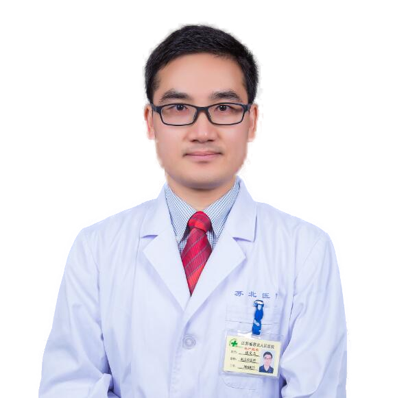
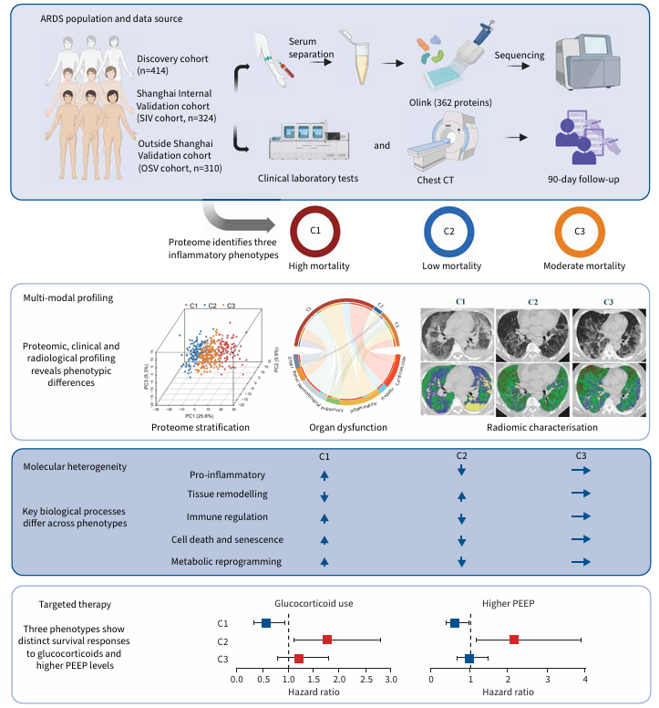

ARDS 炎症分型
融合蛋白组、影像和临床表型，识别具有不同预后与治疗反应的生物学亚型。
全国多中心临床研究协作网络
SEARCH 联结临床一线、标准化队列、生物样本库与多组学研究，让来自不同中心的问题和证据汇聚成可验证、可转化的研究发现。
数据截至
2026.07.02
Why SEARCH
我们相信，只有把不同医院、不同学科和不同数据层次真正连接起来，才能看见 ARDS 与脓毒症背后的异质性。
主中心与全国分中心共同完成病例入组、样本采集、长期随访和临床验证。每一份数据都来自规范流程，每一项发现都需要回到真实临床场景接受检验。
查看全国合作单位 →Research & Outcomes
融合蛋白组、影像和临床表型，识别具有不同预后与治疗反应的生物学亚型。
追踪感染、免疫代谢与器官损伤之间的动态关系，寻找可干预通路。
将临床、影像、实验室与组学特征转化为可验证的早期预警模型。
在多中心真实世界数据中评价不同亚型的治疗反应与长期结局。
Coordinating center · SEARCH
复旦大学附属中山医院作为 SEARCH 主中心，统筹研究方案、标准化队列与跨中心协作，让每一个临床问题都能沿着可追溯的路径走向可验证的答案。

Principal investigator
SEARCH 项目总负责人 · 复旦大学附属中山医院主中心 PI
A shared front line
这里将展示主中心团队合照。照片确认后，替换该预留区域即可。
People behind the cohort
SEARCH 汇聚急诊、重症、呼吸、影像与组学研究者，以共同标准和彼此信任连接全国多中心。每一次讨论、采样与数据核对，都凝聚着临床一线的坚持，也让研究回到改善危重症患者结局的共同愿望。首页呈现六位 PI，完整成员可在“合作单位”中查看。
了解合作网络上海市第一人民医院分中心 PI
上海交通大学医学院附属仁济医院分中心 PI
武汉大学人民医院分中心 PI
广东省人民医院分中心 PI
浙江大学附属第二医院分中心 PI

江苏省苏北人民医院分中心 PI
Emergency & Critical Care Research
一个由全国多中心队列、生物样本与跨学科方法共同支撑的开放科研协作平台。

FEATURE / 01
从前瞻性多中心队列出发，整合血清蛋白组、临床实验室与胸部 CT，探索分型指导个体化治疗的证据路径。
阅读研究摘要 ↗问题 → 方法 → 代表成果
蛋白组学 · 影像组学 · 前瞻性队列
01免疫代谢 · 微生态 · 机制研究
02临床表型 · 动态模型 · 外部验证
03亚型治疗效应 · 长期结局 · 多中心证据
04“我们从临床现场提出问题，也必须让研究结果回到临床现场接受检验。”
宋振举 教授SEARCH 项目负责人代表荣誉与学术职务：候选 5 项待团队确认
SEARCH COHORT / CHINA
连接标准化临床队列、生物样本库与多组学研究，为 ARDS、脓毒症及多器官功能障碍提供可验证的科研基础。
Live snapshot
2,316 主中心
955 分中心
Research pipeline
从急诊与危重症现场识别未被满足的研究问题。
以统一方案开展入组、采样、随访和质量控制。
整合临床、影像、实验室、蛋白组和微生态数据。
检验研究发现的稳定性、可解释性和临床价值。
Open collaboration
合作入口暂用现有联系邮箱，团队邮箱注册完成后统一替换。
发起科研合作